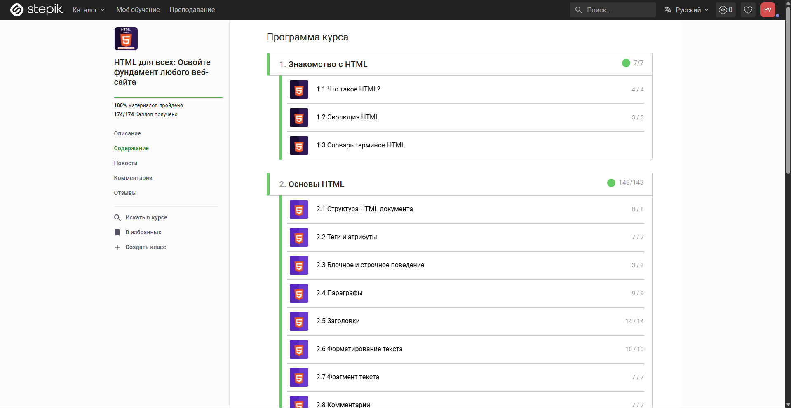

На этой странице показано, какие форматы лучше подходят для разных типов изображений.
Формат: JPG — идеально подходит для фотографий и сложных изображений с градиентами.
JPG использует сжатие с потерями, что даёт маленький размер файла при хорошем визуальном качестве.
Этот формат НЕ подходит для изображений с прозрачностью или чёткими краями (логотипы, скриншоты).
Размер файла: 700 × 694 пикселя (почти квадрат, что характерно для портретной фотографии).

Формат: PNG — лучший выбор для скриншотов, схем и изображений с текстом.
PNG использует сжатие без потерь, сохраняя все детали и чёткие края букв.
Также PNG поддерживает прозрачность (альфа-канал), что полезно для иконок с неровным фоном.
Минус: размер файла обычно больше, чем у JPG.
Исходный размер: 1919 × 991 пиксель. В коде я уменьшил отображение до 700 × 362, сохранив пропорции (ширина стала 700, высота пересчитана автоматически).
Формат: SVG (Scalable Vector Graphics) — идеален для логотипов, иконок и простых иллюстраций. В отличие от JPG и PNG, SVG — это не растровое, а векторное изображение (хранится как математические формулы). Благодаря этому SVG: ✅ Масштабируется без потери качества (хоть на экран телевизора 8K) ✅ Весит очень мало (лёгкие текстовые файлы) ✅ Можно анимировать и стилизовать через CSS ❌ Не подходит для сложных фотографий или реалистичных сцен.
Формат: GIF — исторически единственный формат для простой анимации в вебе.
Особенности:
✅ Поддерживает анимацию (последовательность кадров)
❌ Ограниченная цветовая палитра (максимум 256 цветов)
❌ Плохое сжатие → большой размер файла для длинной анимации
❌ Нет поддержки прозрачности (только 1 бит — полностью прозрачно или нет)
Современная альтернатива: Анимированный WebP даёт лучшее качество при меньшем размере.
Но для простых индикаторов загрузки, коротких гифок с мемами и исторической совместимости GIF всё ещё используется.